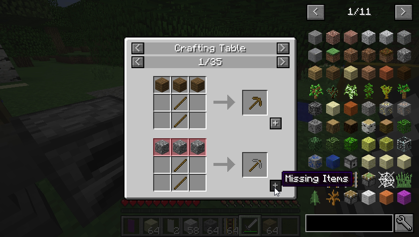

Categoría: Utilidades
JEI (Just Enough Items): Nunca más busques crafteos en Google
LFZ Team
•
9 de Agosto, 2026

El mod más descargado de la historia
¿Cansado de minimizar el juego para buscar en la wiki cómo se craftea un observador o un faro? Just Enough Items (JEI) es la solución a todos tus problemas.
¿Cómo funciona JEI?
Una vez instalado, al abrir tu inventario verás una barra de búsqueda y una lista infinita de todos los bloques y objetos del juego (incluyendo los de tus mods) en el lado derecho de la pantalla.
Atajos de teclado esenciales
- Tecla R (Recipe): Pon el cursor sobre cualquier objeto y presiona R. Verás exactamente cómo se craftea.
- Tecla U (Uses): Pon el cursor sobre un material (como hierro) y presiona U. Verás todos los crafteos en los que se utiliza ese material.
- Doble clic en la barra de búsqueda: Te permite filtrar por colores o mods (escribiendo @nombre_del_mod).
Instalar JEI es pan comido con LFZ Launcher. Solo ve a la pestaña "Bajar Mods", busca "JEI" y dale a instalar.